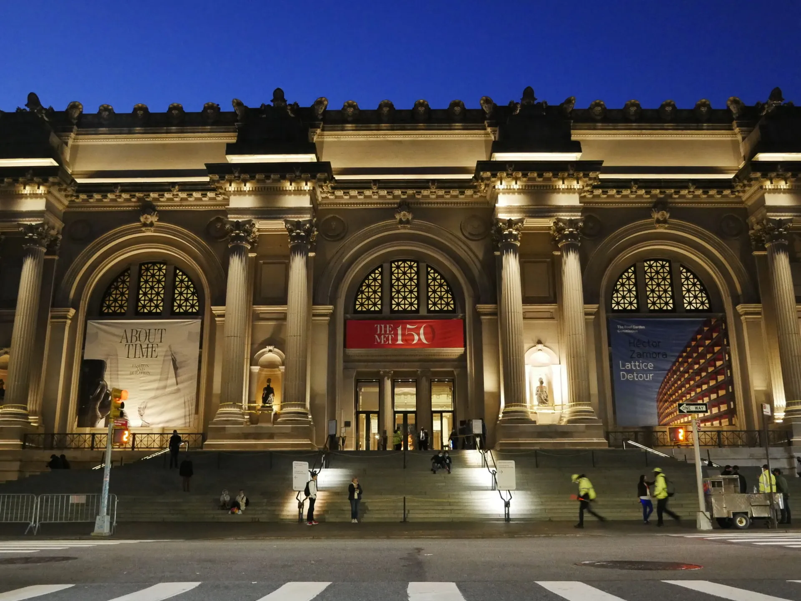

What is the MET?
The Metropolitan Museum of Art, better known as the Met, is one of New York City’s most famous attractions and a must-see
for anyone interested in art or history. Sitting along Fifth Avenue beside Central Park, the museum holds an incredible
collection that spans thousands of years, from ancient Egyptian temples and medieval armor to masterpieces by Van Gogh and Monet.
Walking through its galleries feels like traveling across time and cultures, making the Met an unforgettable stop for visitors of
all ages.

The Metropolitan Museum of Art first opened its doors in 1870, founded by a group of American citizens who wanted to create a place
where art could be studied and enjoyed by the public. What started as a modest collection has grown into an institution with more
than two million works, representing nearly every corner of the globe and every period of human history. From its early days, the Met
was meant to be more than just a gallery — it was envisioned as a cultural center where art could inspire, educate, and connect people.
The history of The Met is closely tied to the development of Central Park, as Park designers Frederick Law Olmsted and Calvert Vaux initially suggested converting the existing Arsenal building into a museum in their 1858 proposal. The official movement to create a major institution began in 1867 when members of the Union League Club, an elite social club, formed a committee to advocate for a metropolitan art museum. This committee, which included Park proponent William Cullen Bryant and architect Richard Morris Hunt, officially established the Metropolitan Museum of Art in 1870. The museum began by hosting public exhibitions on Fifth Avenue and 53rd Street. In 1874, park commissioners offered the committee land in Central Park, and Park architect Calvert Vaux was commissioned to design a High Victorian Gothic building with multiple wings that would span the area between 79th and 84th Streets. The first Vaux-designed wing opened to the public in 1880. Later expansions, though not fully realizing Vaux’s original master plan, did reach his proposed footprint. Key architectural additions include the monumental Fifth Avenue entrance hall and façade, designed by Richard Morris Hunt in the early 20th century, followed by five wings designed by McKim, Mead and White. A subsequent era of modern additions was ushered in when Thomas Hoving became director in 1966, including significant additions like the Lehman Wing and the Temple of Dendur. The parts of the museum facing Central Park today are primarily these modern additions, which are notable for their geometric austerity and large glass walls.
The Met’s renown stems from the vast scope and quality of its holdings, with a collection spanning over 5,000 years of history and containing 36,000 pieces from around the globe. Among its most celebrated areas is the Egyptian exhibit, which is one of the Met's most famous collections, featuring over 26,000 items spanning 39 rooms, including the visually stunning reconstructed tomb of the Egyptian courtier, Perneb. The museum also dedicates eight galleries to medieval art, including a room designed to evoke a medieval church. While much of the medieval art is based on Christian themes, The Met also hosts extensive collections of Buddhist, Islamic, and Jewish art, alongside works from many other faiths and cultures. For those interested in performance and design, the André Mertens Galleries for Musical Instruments feature more than 800 specimens from various musical disciplines, and the Costume Institute hosts rotating exhibits showcasing styles of dress from different periods, sometimes acting as a retrospective on a specific designer. In addition to its extensive permanent collection, the Met has hosted thousands of temporary exhibits covering diverse topics, such as the works of Picasso, heroes of Africa, and modern American art masters.

Figure pendant by Tairona artist(s) (900–1600 CE)

Vase by M. Louise McLaughlin (1878)

Calligraphy by Zhou Tianqiu Chinese in the Ming dynasty (1368–1644)

Cosmetic box in the shape of a composite capital created in Late Period–Ptolemaic Period (664–300 B.C.)

Ornament with heads of roaring lions, possibly the terminal of a sword or dagger hilt by Assyrian(s) (ca. 8th century BCE)

The Met has a significant impact on both the international art world and the cultural life of New York City. The Met Fifth Avenue alone hosts millions of visitors each year. The museum actively promotes accessibility; it offers children's programming throughout the year and walking tours in many languages. Furthermore, it provides pay-what-you-wish admission at ticket counters to New York State residents and students from the tri-state area (NY, NJ, and CT), provided they show a valid ID. General admission tickets include same-day entry to both Met locations. As a monumental building located between 79th and 84th Street on the east side of Central Park, the museum is considered a famous landmark that anchors the cultural landscape of the city.
The popularity is sustained by its extraordinary and unique collection areas that cater to diverse interests. One of the most famous collections is the Egyptian exhibit, which is vast, spanning 39 rooms and containing over 26,000 items, including the visually stunning reconstructed tomb of the courtier Perneb. For those interested in historical dress, the Costume Institute is a unique hall known for its series of rotating exhibits that showcase historical styles and designer retrospectives. Music lovers are drawn to the André Mertens Galleries for Musical Instruments, which features more than 800 specimens from various musical disciplines. Furthermore, the museum hosts eight galleries dedicated to medieval art (mostly focusing on Christian themes, reflecting art produced in Europe during that period) and extensive collections of Buddhist, Islamic, and Jewish art. The Met also features temporary exhibits on notable subjects, such as the works of Picasso, modern American art masters, and the Isle of Lewis chess pieces, among thousands of others.

The Met’s impact on the world and the local New York City community is defined by its core mission to connect people. Its mission is to collect, study, conserve, and present significant works of art across time and cultures in order to connect all people to creativity, knowledge, ideas, and one another. This global reach is evident in the fact that millions of people participate in the Met experience online. Locally, The Met supports the community through specific accessibility measures: it offers pay-what-you-wish admission at ticket counters for New York State residents and students from New York, New Jersey, or Connecticut who show a valid ID. Additionally, the museum provides year-round children's programming and offers walking tours in many languages.
In New York City specifically, The Met is a major cultural landmark physically and historically integrated into the city’s structure. It resides in two iconic sites in the city—The Met Fifth Avenue and The Met Cloisters. The Met Fifth Avenue is located prominently on the east side of Central Park between 79th and 84th Street. The history of The Met is closely tied to the Park itself; after its official establishment in 1870, park commissioners offered the committee land in Central Park in 1874 for construction. Park architect Calvert Vaux was asked to design the museum, and the first Vaux-designed wing opened to the public in 1880. While Vaux’s master plan for the whole museum was never fully realized, future expansions did eventually reach his proposed footprint. During the early 20th century, the monumental Fifth Avenue entrance hall and façade were designed by Richard Morris Hunt. More modern additions to the building, such as the Temple of Dendur and the Lehman Wing, were ushered in under director Thomas Hoving, resulting in the areas facing the Park being primarily these modern additions, notable for their geometric austerity and large glass walls.


.jpeg)

.jpeg)